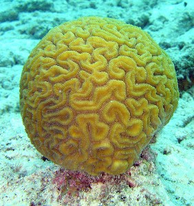
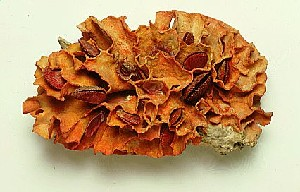
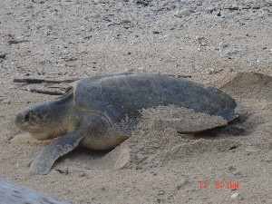

marine
|
ɑrɑin आराईन MORPH: ɑrɑ-in. Etym: Bea; बेया. N सं. dugong; डूगोंग; पानी सूअर. SD: marine, समुद्री. SEE: kɔrɔiɲ1 ‘dugong’ ‘डूगोंग; पानी सूअर कौरौईञhm:{1}’.Environmental
bɑrcɔm2 बारचौम N सं. small shell used for making jewellery to adorn the knees; छोटी सीपी जो आभूषण बनाने के काम आती है, जिसे पायल की तरह घुटनों तक पहना जाता है. SD: marine, समुद्री. SEE: ʈɔeco ‘anklet; shell anklet’ ‘पायल (घुंघरू); टखना पट्टी टौएचो ’; bɑrcɔm1 ‘bird’ ‘पक्षी बारचौमhm:{1}’.Environmental
beːl बेऽल N सं. a kind of oyster; एक प्रकार की सीपी. SD: marine, समुद्री.Environmental
 |
 belloʈɔro बेल्लोटौरो MORPH: bello-ʈɔro. VAR: belo-ʈɔrɔ बेलोटौरौ. N सं. green turtle; एक प्रकार का हरा कछुआ. SD: marine, समुद्री.Environmental
belloʈɔro बेल्लोटौरो MORPH: bello-ʈɔro. VAR: belo-ʈɔrɔ बेलोटौरौ. N सं. green turtle; एक प्रकार का हरा कछुआ. SD: marine, समुद्री.Environmental
berebe बेरेबे N सं. sea shell with thin blade; पतली धार वाली सीपी. SD: marine, समुद्री.Environmental
bɛterbɑt बैतेरबात N सं. shell used for shaving and cutting; सीपी जो काटने व दाढ़ी बनाने के लिये प्रयोग में आती है. SD: marine, समुद्री.Environmental
birɑdi बीरादी N सं. shore; समुद्र का किनारा. SD: natural environment, प्राकृतिक वातावरण, marine, समुद्री.Environmental
bo5 बो VAR: bo-cɑːy बोचाऽय. N सं. oyster; सीपी. SD: marine, समुद्री. SEE: bo1 ‘and; then’ ‘और; फिर बोhm:{1}’; bo2 ‘behind’ ‘पीछे बोhm:{2}’; bo3 ‘heart’ ‘दिल बोhm:{3}’; bo4 ‘more’ ‘ज़्यादा बोhm:{4}’.Environmental
bui3 बूई Etym: North Andaman; उत्तरी अण्डमान. N सं. a kind of shell; एक प्रकार की सीपी. SD: marine, समुद्री. SEE: bui1 ‘fruit’ ‘फल बूईhm:{1}’; bui2 ‘kind person’ ‘दयालु व्यक्ति बूईhm:{2}’.Environmental
 bullu2 बूल्लू VAR: bulu बूलू; buːlu बूऽलू. N सं. a white round worm of the outer sea; बाहरी समुद्र पर पाया जाने वाला सफ़ेद गोल कीड़ा. SD: insect & invertebrate, कीट-पतंग एवं अरीढ़ जीव, marine, समुद्री. SEE: bullu1 ‘fish’ ‘मछली बूल्लूhm:{1}’.Environmental
bullu2 बूल्लू VAR: bulu बूलू; buːlu बूऽलू. N सं. a white round worm of the outer sea; बाहरी समुद्र पर पाया जाने वाला सफ़ेद गोल कीड़ा. SD: insect & invertebrate, कीट-पतंग एवं अरीढ़ जीव, marine, समुद्री. SEE: bullu1 ‘fish’ ‘मछली बूल्लूhm:{1}’.Environmental
 bun बून Etym: Jeru; जेरू. VAR: buɲ बूञ; buːn बूऽन. N सं. oyster shell used for cutting the placenta of a newborn; नाल काटने में प्रयोग की जाने वाली सीपी. SD: marine, समुद्री.Environmental
bun बून Etym: Jeru; जेरू. VAR: buɲ बूञ; buːn बूऽन. N सं. oyster shell used for cutting the placenta of a newborn; नाल काटने में प्रयोग की जाने वाली सीपी. SD: marine, समुद्री.Environmental
 |
burku बूरकू VAR: burkʰu बूरखू. N सं. a kind of coral; एक प्रकार का मूंगा. SD: marine, समुद्री.Environmental
burkʰujeo बूरखूजेओ MORPH: burkʰu-jeo. N सं. coral reef; मूंगे की चट्टान. SD: marine, समुद्री.Environmental
burukʰu बूरूखू N सं. place where underwater rocks can be seen; जगह जहां पानी के अंदर की चट्टानें देख सकते हैं. SD: marine, समुद्री, place, स्थान.Environmental
burukʰutɑrɑboʈʰo बूरूखूताराबोठो MORPH: burukʰu-tɑrɑ-boʈʰo. N सं. end, of the rocky region; चट्टानी क्षेत्र की समाप्ति. SD: marine, समुद्री, natural environment, प्राकृतिक वातावरण.Environmental
cɑlo3 चालो VAR: cɑlɔ चालौ. N सं. a kind of small shell; एक प्रकार की छोटी सीपी. SD: marine, समुद्री. NT: Used for making the Andamanese girdle, the ‘shirbele’. ‘शिरबेले’ आभूषण बनाने में प्रयुक्त होने वाली सीपी।. SEE: cɑlo1 ‘cricket’ ‘झींगुर चालोhm:{1}’; cɑlo2 ‘many’ ‘ज़्यादा; ढेर सारा चालोhm:{2}’.Environmental
 cɑlotɛc चालोतैच MORPH: cɑlo-tɛc. N सं. piece of shell; सीपी का टुकड़ा. SD: marine, समुद्री.Environmental
cɑlotɛc चालोतैच MORPH: cɑlo-tɛc. N सं. piece of shell; सीपी का टुकड़ा. SD: marine, समुद्री.Environmental
cɑrɑlo1 चारालो VAR: cɑːrɑːlɔ चाऽराऽलौ. N सं. conch, white; एक प्रकार का सफ़ेद शंख. SD: marine, समुद्री. SEE: cɑrɑlo2 ‘stones, small’ ‘पत्थर, छोटे चारालोhm:{2}’.Environmental
cɑrɑlo2 चारालो VAR: cɑːrɑːlɔ चाऽराऽलौ. N सं. stones, small; छोटे पत्थर. SD: marine, समुद्री. SEE: cɑrɑlo1 ‘conch, white’ ‘शंख, सफ़ेद चारालोhm:{1}’.Environmental
cɛnkolo चैन्कोलो MORPH: cɛn-kolo. N सं. turban shell; एक प्रकार की सीपी. SD: marine, समुद्री.Environmental
ciriʈli चीरीटली N सं. turtle; कछुआ. SD: marine, समुद्री.Environmental
 |
 coɑi चोआई VAR: coɑe चोआए. N सं. giant clam; एक प्रकार की बड़ी सीपी, काला जड़ी. SD: marine, समुद्री.Environmental
coɑi चोआई VAR: coɑe चोआए. N सं. giant clam; एक प्रकार की बड़ी सीपी, काला जड़ी. SD: marine, समुद्री.Environmental
coɑitʰomo चोआईथोमो MORPH: coɑi-tʰomo. N सं. meat inside the clam; सीपी का मांस. SD: marine, समुद्री.Environmental
coɑy चोआय N सं. shell with two halves; दो भागों में बंटी सीपी. SD: marine, समुद्री.Environmental
 |
 cokbi चोक्बी VAR: cɔkbi चौक्बी. N सं. a green medium-sized turtle; एक हरा मध्यम आकार का कछुआ. SD: marine, समुद्री.Environmental
cokbi चोक्बी VAR: cɔkbi चौक्बी. N सं. a green medium-sized turtle; एक हरा मध्यम आकार का कछुआ. SD: marine, समुद्री.Environmental
cokbiliu चोकबीलीऊ MORPH: cokbi-liu. VAR: cokbiiliw चोकबीईलीव. N सं. a kind of green sea turtle, female; मादा हरा समुद्री कछुआ. SD: marine, समुद्री.Environmental
cokbimulu चोक्बीमूलू MORPH: cokbi-mulu. N सं. egg, of a turtle; कछुए का अंडा. SD: marine, समुद्री.Environmental
cokbitʰɑːrɔ चोकबीथाऽरौ MORPH: cokbi-tʰɑːrɔ. N सं. turtle, male; नर कछुआ. SD: marine, समुद्री.Environmental
cokbitei चोक्बीतेई MORPH: cokbi-tei. Etym: Jeru; जेरू. N सं. turtle blood; कछुए का ख़ून. SD: body part term, शारीरिक अंग शब्दावली, marine, समुद्री.Environmental
 cokbitimɑ चोक्बीतीमा MORPH: cokbi-timɑ. VAR: cokbi-temɑ चोक्बीतेमा. N सं. newborn of green sea turtle; कछुए का बच्चा. SD: marine, समुद्री.Environmental
cokbitimɑ चोक्बीतीमा MORPH: cokbi-timɑ. VAR: cokbi-temɑ चोक्बीतेमा. N सं. newborn of green sea turtle; कछुए का बच्चा. SD: marine, समुद्री.Environmental
cokbitʰomu चोकबीथोमू MORPH: cokbi-tʰomu. N सं. turtle flesh; कछुए का मांस. SD: edible item, खाद्य सामग्री, marine, समुद्री.Environmental
 |
cokbiʈoy चौकबीटोय MORPH: cokbi-ʈoy. VAR: cokbi-ʈɔy चोक्बीटौय. N सं. turtle shell; कछुए का खोल. SD: marine, समुद्री, body part term, शारीरिक अंग शब्दावली.Environmental
 cokbiʈɔelone चोक्बीटौएलोने MORPH: cokbi-ʈɔ-elone. VAR: cokbi-yɔne चोकबीयौने. N सं. turtle oil; कछुए का तेल. SD: costume & adornment, आभूषण एवं श्रृंगार, marine, समुद्री.Environmental
cokbiʈɔelone चोक्बीटौएलोने MORPH: cokbi-ʈɔ-elone. VAR: cokbi-yɔne चोकबीयौने. N सं. turtle oil; कछुए का तेल. SD: costume & adornment, आभूषण एवं श्रृंगार, marine, समुद्री.Environmental
col चोल N सं. sea shell; एक समुद्री सीपी. SD: marine, समुद्री.Environmental
cowɑːy चोवाऽय N सं. oyster, big; एक प्रकार की बड़ी सीपी. SD: marine, समुद्री.Environmental
cɔkbitɑrɑkɑːl चौक्बीताराकाऽल MORPH: cɔkbi-tɑrɑ-kɑːl. N सं. a small sand-coloured crab that looks like a turtle; मिट्टी के रंग का छोटा केकड़ा जो कछुए की तरह दिखता है. SD: marine, समुद्री.Environmental
curɑlɔ चूरालौ N सं. pebbles; कंकड़. SD: marine, समुद्री.Environmental
ɖik2 डीक N सं. prawn-like inedible creature; झींगा की तरह का अखाद्य जीव. SD: marine, समुद्री. SEE: ɖik1 ‘devil; mythological being’ ‘दैत्य; पौराणिक चरित्र डीकhm:{2}’.Environmental
 ɖiutɑrɑʈɛʈ डीऊताराटैट MORPH: ɖiu-tɑrɑ-ʈɛʈ. N सं. Sundial shell, a shell with circular black lines on top; एक प्रकार की काली गोल धारियों वाली सीपी. Architectonica, species of. SD: marine, समुद्री.Environmental
ɖiutɑrɑʈɛʈ डीऊताराटैट MORPH: ɖiu-tɑrɑ-ʈɛʈ. N सं. Sundial shell, a shell with circular black lines on top; एक प्रकार की काली गोल धारियों वाली सीपी. Architectonica, species of. SD: marine, समुद्री.Environmental
ɖuŋ डूङ N सं. an insect that lives in salt water; खारे पानी में रहने वाला कीड़ा. SD: marine, समुद्री. NT: It may be red, black or white. लाल, काले और सफ़ेद रंग में पाया जाने वाला।.Environmental
 ebicɔw एबीचौव N सं. posterior, of dugong; डूगोंग का पिछला हिस्सा. SD: body part term, शारीरिक अंग शब्दावली, marine, समुद्री.Environmental
ebicɔw एबीचौव N सं. posterior, of dugong; डूगोंग का पिछला हिस्सा. SD: body part term, शारीरिक अंग शब्दावली, marine, समुद्री.Environmental
epʰile एफीले MORPH: e-pʰile. N सं. tide; ज्वार. SD: natural environment, प्राकृतिक वातावरण, marine, समुद्री.Environmental
erpʰile एरफीले MORPH: er-pʰile. N सं. crab sting; केकड़े का डंक. SD: marine, समुद्री.Environmental
etɑo एताओ N सं. a type of shell; एक प्रकार का खोल. SD: marine, समुद्री.Environmental
etcɔleɔ एतचौलेऔ N सं. small wave; छोटी लहर. SD: natural environment, प्राकृतिक वातावरण, marine, समुद्री.Environmental
etkɔbo2 एतकौबो MORPH: et-kɔbo. N सं. shell; सीपी. SD: marine, समुद्री. SEE: etkɔbo1 ‘bark’ ‘छाल एत्कौबोhm:{1}’; etkɔbo3 ‘skin’ ‘खाल एत्कौबोhm:{3}’.Environmental
ɛycoːwbuxu ऐयचोऽवबूखू N सं. dugong (female); मादा डूगोंग. SD: marine, समुद्री.Environmental
 ɛycoːwtʰɑːrɔ ऐयचोऽवथारौ MORPH: ɛy-coːw-tʰɑːrɔ. N सं. dugong (male); नर डूगोंग. SD: marine, समुद्री.Environmental
ɛycoːwtʰɑːrɔ ऐयचोऽवथारौ MORPH: ɛy-coːw-tʰɑːrɔ. N सं. dugong (male); नर डूगोंग. SD: marine, समुद्री.Environmental
fɑl2 फाल N सं. wave; लहर. SD: natural environment, प्राकृतिक वातावरण, marine, समुद्री. SEE: fɑl1 ‘leaf’ ‘पत्ता फालhm:{1}’.Environmental
fɑlɖuo फालडूओ N सं. wave, big; बड़ी लहर. SD: natural environment, प्राकृतिक वातावरण, marine, समुद्री.Environmental
fɑlekkɔreːbɔ फालेककौरेऽबौ MORPH: fɑl-ekkɔ-reːbɔ. N सं. wave, small; छोटी लहर. SD: natural environment, प्राकृतिक वातावरण, marine, समुद्री.Environmental
fɑlerkɔlɛ फालएरकौलै MORPH: fɑl-er-kɔlɛ. N सं. wave, big; बड़ी लहर. SD: natural environment, प्राकृतिक वातावरण, marine, समुद्री.Environmental
fɑrɑkɔʈɔːʈmo फाराकौटौऽटमो MORPH: fɑrɑkɔ-ʈɔːʈmo. VAR: pɑrɑkɔ-ʈɔːʈmo पाराकौटौऽटमो. N सं. prawns; झींगा मछली. SD: marine, समुद्री.Environmental
foːʈ फोऽट N सं. a kind of oyster; एक प्रकार की सीपी. SD: marine, समुद्री.Environmental
iːr ईऽर N सं. wave; लहर. SD: natural environment, प्राकृतिक वातावरण, marine, समुद्री.Environmental
jili2 जीली N सं. sea shell; एक प्रकार का समुद्री सीपी. SD: marine, समुद्री. SEE: jili1 ‘flower’ ‘फूल जीलीhm:{1}’.Environmental
jiribul जीरीबूल N सं. Nancouri shell; नानकौड़ी सीपी. SD: marine, समुद्री.Environmental
kɑːe काऽए N सं. a kind of black volcanic crab; एक प्रकार का काला ज्वालामुखीय केकड़ा. SD: marine, समुद्री.Environmental
kɑl काल VAR: kɑːl काऽल. N सं. a sea variety of a small crab; छोटा समुद्री केकड़ा. SD: marine, समुद्री. NT: The soup of this edible crab is supposed to cure colds. ज़ुकाम होने पर इस केकड़े को उबालकर इसका सूप औषधी के रूप में पीया जाता है।.Environmental
 |
 kɑlɑʈop1 कालाटोप VAR: kɑlɑʈɔp कालाटौप. N सं. a kind of inedible hermit crab; एक प्रकार का अखाद्य केकड़ा. SD: marine, समुद्री. SEE: kɑlɑʈop2 ‘shell; conch’ ‘सीपी; शंख कालाटोपhm:{2}’; kɑlɑʈop3 ‘snail’ ‘घोंघा कालाटोपhm:{3}’.Environmental
kɑlɑʈop1 कालाटोप VAR: kɑlɑʈɔp कालाटौप. N सं. a kind of inedible hermit crab; एक प्रकार का अखाद्य केकड़ा. SD: marine, समुद्री. SEE: kɑlɑʈop2 ‘shell; conch’ ‘सीपी; शंख कालाटोपhm:{2}’; kɑlɑʈop3 ‘snail’ ‘घोंघा कालाटोपhm:{3}’.Environmental
 kɑlɑʈop2 कालाटोप VAR: kɑlɑʈɔp कालाटौप. N सं. frog shell; conch; मेंढक की सीपी; हरमिट केकड़ा; शंख. SD: marine, समुद्री. SEE: kɑlɑʈop1 ‘crab’ ‘केकड़ा कालाटोपhm:{1}’; kɑlɑʈop3 ‘snail’ ‘घोंघा कालाटोपhm:{3}’.Environmental
kɑlɑʈop2 कालाटोप VAR: kɑlɑʈɔp कालाटौप. N सं. frog shell; conch; मेंढक की सीपी; हरमिट केकड़ा; शंख. SD: marine, समुद्री. SEE: kɑlɑʈop1 ‘crab’ ‘केकड़ा कालाटोपhm:{1}’; kɑlɑʈop3 ‘snail’ ‘घोंघा कालाटोपhm:{3}’.Environmental
 |
 kɑlɑʈop3 कालाटोप VAR: kɑlɑʈɔp कालाटौप. N सं. snail used as a bait; घोंघा जिसको चारे की तरह इस्तेमाल किया जाता है. SD: marine, समुद्री. SEE: kɑlɑʈop1 ‘crab’ ‘केकड़ा कालाटोपhm:{1}’; kɑlɑʈop2 ‘shell; conch’ ‘सीपी; शंख कालाटोपhm:{2}’.Environmental
kɑlɑʈop3 कालाटोप VAR: kɑlɑʈɔp कालाटौप. N सं. snail used as a bait; घोंघा जिसको चारे की तरह इस्तेमाल किया जाता है. SD: marine, समुद्री. SEE: kɑlɑʈop1 ‘crab’ ‘केकड़ा कालाटोपhm:{1}’; kɑlɑʈop2 ‘shell; conch’ ‘सीपी; शंख कालाटोपhm:{2}’.Environmental
kɑplo कापलो Etym: North Andaman; उत्तरी अण्डमान. N सं. a kind of shell; mangrove seed; एक प्रकार की सीपी; खाड़ी पेड़ के बीज. SD: marine, समुद्री. NT: This shell produces sound like a conch. शंख की तरह ध्वनि करने वाली सीपी।.Environmental
kʰɑrɑe खाराए N सं. crab found in sand; बालू का केकड़ा. SD: marine, समुद्री.Environmental
 kɑrɑšɔ2 काराशौ VAR: kɔrɔšo कौरौशो. N सं. a kind of white shell; एक प्रकार की सफ़ेद सीपी. SD: marine, समुद्री. NT: Striped white shell found in sand. Used for making garlands for dancing ceremonies. धारीदार सीपी जो माला बनाने में काम आती है। नाच-गाने में प्रयुक्त होती है ।. SEE: kɑrɑšɔ1 ‘necklace; bracelet’ ‘हार; बाजूबंद काराशौhm:{1}’.Environmental
kɑrɑšɔ2 काराशौ VAR: kɔrɔšo कौरौशो. N सं. a kind of white shell; एक प्रकार की सफ़ेद सीपी. SD: marine, समुद्री. NT: Striped white shell found in sand. Used for making garlands for dancing ceremonies. धारीदार सीपी जो माला बनाने में काम आती है। नाच-गाने में प्रयुक्त होती है ।. SEE: kɑrɑšɔ1 ‘necklace; bracelet’ ‘हार; बाजूबंद काराशौhm:{1}’.Environmental
kɑreo कारेओ N सं. a kind of edible crab; एक प्रकार का खाद्य केकड़ा. SD: marine, समुद्री. NT: This crab is found in the sea. It has thin legs and dots on the back. पतली टांगों वाला और पीठ पर धब्बों वाला समुद्री केकड़ा।.Environmental
 |
 keo केओ VAR: keoː केओऽ; kɛo कैओ; kɛːo कैऽओ. N सं. crab; केकड़ा. keo trɑ pʰoŋ केओ त्रा फोङ. hole of crab. केकड़े का बिल.
keo केओ VAR: keoː केओऽ; kɛo कैओ; kɛːo कैऽओ. N सं. crab; केकड़ा. keo trɑ pʰoŋ केओ त्रा फोङ. hole of crab. केकड़े का बिल.  sɑre be jeoɑmo kɛo bituŋ cɔŋɔm सारे बे जेओआमो कैओ बीतूङ चौङौम. If there was a high tide you would have had lots of crab. अगर ज्वार आता तो तुमको बहुत केकड़े मिलते।. SD: marine, समुद्री. NT: This crab is edible. बहुप्रचलित खाद्य केकड़ा।.Environmental
sɑre be jeoɑmo kɛo bituŋ cɔŋɔm सारे बे जेओआमो कैओ बीतूङ चौङौम. If there was a high tide you would have had lots of crab. अगर ज्वार आता तो तुमको बहुत केकड़े मिलते।. SD: marine, समुद्री. NT: This crab is edible. बहुप्रचलित खाद्य केकड़ा।.Environmental
 |
 kʰerekʰolu खेरेखोलू MORPH: kʰere-kʰolu. N सं. brain coral; खोपड़ीनुमा मूंगा. SD: marine, समुद्री.Environmental
kʰerekʰolu खेरेखोलू MORPH: kʰere-kʰolu. N सं. brain coral; खोपड़ीनुमा मूंगा. SD: marine, समुद्री.Environmental
 |
kʰerekʰu खेरेखू N सं. a kind of coral; एक प्रकार का मूंगा. SD: marine, समुद्री. NT: This coral has a structure like that of a rose petal. गुलाब की पंखड़ियों के आकार वाला सफ़ेद मूंगा।.Environmental
 |
kʰerekʰutirkʰuɖoi खेरेखूतीरखूडोई MORPH: kʰerekʰu-tir-kʰuɖoi. N सं. a kind of coral; एक प्रकार का मूंगा. SD: marine, समुद्री.Environmental
keːyɑʈʈɔ कैऽयाट्टौ N सं. a variety of freshwater crab; मीठे जल का केकड़ा. SD: marine, समुद्री.Environmental
 |
 kɛʈʰo कैठो VAR: kɛːʈʰo कैऽठो; kɛːyɑʈʈɔ कैऽयाट्टौ. N सं. freshwater prawn; मीठे पानी का झींगा. SD: marine, समुद्री.Environmental
kɛʈʰo कैठो VAR: kɛːʈʰo कैऽठो; kɛːyɑʈʈɔ कैऽयाट्टौ. N सं. freshwater prawn; मीठे पानी का झींगा. SD: marine, समुद्री.Environmental
kɛwo कैवो N सं. a kind of red crab; एक प्रकार का लाल केकड़ा. SD: marine, समुद्री.Environmental
kol कोल N सं. a small edible crab; एक प्रकार का छोटा खाद्य केकड़ा. SD: marine, समुद्री.Environmental
kolɑy कोलाय N सं. a kind of sea shell; एक प्रकार की समुद्री सीपी. SD: marine, समुद्री.Environmental
 |
kolɔ कोलौ N सं. a type of shell (edible); Mango shell; एक प्रकार का शंख. SD: marine, समुद्री.Environmental
 |
kolɔʈɔp कोलौटौप N सं. seasnail; समुद्री घोंघा. SD: marine, समुद्री.Environmental
kor कोर N सं. a medium sized shell; मध्यम आकार की सीपी. SD: marine, समुद्री. NT: It is used as a cup for the purpose of drinking. इसका प्रयोग प्याले की तरह किया जाता है।.Environmental
korɑi कोराई VAR: korɑːe कोराऽए; kɔːrɑːy कौऽराऽय. N सं. a harmful sand crab; खतरनाक बालुई केकड़ा. SD: marine, समुद्री. NT: This small crab has eyes that shine like radium and it is inedible. इसकी आंखें रेडियम की तरह रात को भी चमकती हैं। अखाद्य।.Environmental
koːro कोऽरो N सं. pebbles; कंकड़. SD: marine, समुद्री.Environmental
kɔr कौर VAR: kɔːr कौऽर. N सं. cowry; कौड़ी; एक समुद्री घोंघा. SD: marine, समुद्री.Environmental
 |
 kɔro2 कौरो N सं. nautilus shell; एक प्रकार की सीपी. SD: marine, समुद्री. SEE: kɔro1 ‘fish’ ‘मछली कौरोhm:{1}’.Environmental
kɔro2 कौरो N सं. nautilus shell; एक प्रकार की सीपी. SD: marine, समुद्री. SEE: kɔro1 ‘fish’ ‘मछली कौरोhm:{1}’.Environmental
 |
 kɔrɔiɲ1 कौरौईञ VAR: kɔːrɔɲ कौऽरौञ; kɔrɔin कौरौईन. Etym: Jeru; जेरू. N सं. dugong; डूगोंग; पानी सूअर. kɔrɔiɲ sɑre tɑrɑ-tɑl meo-pʰoŋ ʈʰibikɲo-k-ɔ-m कौरौईञ सारे ताराताल मेओफोङ ठीबीक्ञोकौम. dugong lives in the stone caves of the sea. डूगोंग समुद्र में पत्थर की गुफा में रहता है।. SD: marine, समुद्री. NT: The dugong has a highly developed sense of hearing so one has to be quiet while hunting. डूगोंग की श्रवण शक्ति बहुत तेज़ होती है अतः इसका शिकार करते समय खास शान्ति रखनी पड़ती है।. SEE: ɑrɑin ‘dugong’ ‘डूगोंग; पानी सूअर आराईन ’; kɔrɔiɲ2 ‘garjan tree’ ‘गर्जन पेड़ कौरौईञhm:{2}’.Environmental
kɔrɔiɲ1 कौरौईञ VAR: kɔːrɔɲ कौऽरौञ; kɔrɔin कौरौईन. Etym: Jeru; जेरू. N सं. dugong; डूगोंग; पानी सूअर. kɔrɔiɲ sɑre tɑrɑ-tɑl meo-pʰoŋ ʈʰibikɲo-k-ɔ-m कौरौईञ सारे ताराताल मेओफोङ ठीबीक्ञोकौम. dugong lives in the stone caves of the sea. डूगोंग समुद्र में पत्थर की गुफा में रहता है।. SD: marine, समुद्री. NT: The dugong has a highly developed sense of hearing so one has to be quiet while hunting. डूगोंग की श्रवण शक्ति बहुत तेज़ होती है अतः इसका शिकार करते समय खास शान्ति रखनी पड़ती है।. SEE: ɑrɑin ‘dugong’ ‘डूगोंग; पानी सूअर आराईन ’; kɔrɔiɲ2 ‘garjan tree’ ‘गर्जन पेड़ कौरौईञhm:{2}’.Environmental
 |
kɔrɔp कौरौप VAR: krop क्रोप; kɔrɔb कौरौब. N सं. fiddler crab, a small crab; एक प्रकार का छोटा केकड़ा. SD: marine, समुद्री. NT: Inedible and found in different colours. कई रंगों में मिलने वाला अखाद्य केकड़ा।.Environmental
kuluɽe कूलूड़े N सं. drops of water from the rising tide hitting the shore; सागर में उठते ज्वार की फुहार. SD: marine, समुद्री.Environmental
kʰurum खूरूम VAR: xurum ख़ूरूम. N सं. a medium-sized red/black edible sea crab; मध्यम आकार का लाल/काला खाद्य समुद्री केकड़ा. SD: marine, समुद्री.Environmental
leː लेऽ VAR: le ले. N सं. a harmful wild crab that has hairy legs; खतरनाक जंगली खाद्य केकड़ा जिसके पैर बाल से भरे होते हैं. SD: marine, समुद्री.Environmental
lidɑo लीदाओ N सं. a kind of shell; एक प्रकार की सीपी. SD: marine, समुद्री.Environmental
 |
limmeyo लीम्मेयो MORPH: lim-meyo. N सं. a kind of coral; एक प्रकार का मूंगा. SD: marine, समुद्री.Environmental
moropʰo मोरोफो N सं. a small black crab; छोटा काला केकड़ा. SD: marine, समुद्री.Environmental
 |
 mɔrɔi1 मौरौई VAR: mɔrɔe मौरौए. N सं. sea urchin; जलसाही. SD: marine, समुद्री. SEE: mɔrɔi2 ‘water current’ ‘पानी की धारा मौरौईhm:{2}’.Environmental
mɔrɔi1 मौरौई VAR: mɔrɔe मौरौए. N सं. sea urchin; जलसाही. SD: marine, समुद्री. SEE: mɔrɔi2 ‘water current’ ‘पानी की धारा मौरौईhm:{2}’.Environmental
mɔrɔk मौरौक N सं. small snail, lives in creeks; खाड़ी में पाए जाने वाला नन्हा घोंघा. SD: marine, समुद्री.Environmental
mɔːrɔk मौऽरौक N सं. oyster; सीपी. SD: marine, समुद्री.Environmental
munu मूनू N सं. a kind of red-eyed crab; एक प्रकार का लाल आंख वाला खतरनाक केकड़ा. SD: marine, समुद्री. NT: This crab is dangerous. यह केकड़ा खतरनाक होता है।.Environmental
nɔrɔp नौरौप N सं. razor clam; उस्तरे के आकार की एक प्रकार की सीपी. SD: marine, समुद्री.Environmental
nu2 नू N सं. retreating waves; हल्फ़ा की लौटती लहर. SD: natural environment, प्राकृतिक वातावरण, marine, समुद्री. NT: Name of a woman. अण्डमानी लड़की का नाम।. SEE: nu1 ‘other man’ ‘दूसरा आदमी नूhm:{1}’; nu3 ‘weave net’ ‘जाल बुनना नूhm:{3}’.Environmental
okɑ ओका VAR: oːkɑ ओऽका. N सं. a salt water prawn; fish; खारे पानी का झींगा; मछली. SD: marine, समुद्री.Environmental
olɔʈɔp ओलौटौप N सं. octopus; अष्टभुज. SD: marine, समुद्री.Environmental
ɔːkɑ औऽका N सं. prawn; fish; झींगा; मछली. SD: marine, समुद्री.Environmental
 |
 ɔroɲɑtirtʰiri औरोञातीरथीरी MORPH: ɔro-ɲɑ-tir-tʰiri. N सं. sea anemone; एक प्रकार का समुद्री जीव. SD: marine, समुद्री.Environmental
ɔroɲɑtirtʰiri औरोञातीरथीरी MORPH: ɔro-ɲɑ-tir-tʰiri. N सं. sea anemone; एक प्रकार का समुद्री जीव. SD: marine, समुद्री.Environmental
 |
 ɔrɔɲɑrɑ औरौञारा VAR: ɔrɔŋɑrɑ औरौङारा; ɔrɔɲɑ औरौञा. N सं. typical staghorn coral; हिरन के सींग जैसा मूंगा. SD: marine, समुद्री.Environmental
ɔrɔɲɑrɑ औरौञारा VAR: ɔrɔŋɑrɑ औरौङारा; ɔrɔɲɑ औरौञा. N सं. typical staghorn coral; हिरन के सींग जैसा मूंगा. SD: marine, समुद्री.Environmental
pʰoŋ2 फोङ VAR: fon फोन; foːn फोऽन; pʰon फोन; foŋ फोङ. N सं. a kind of big edible crab; एक प्रकार का बड़ा केकड़ा जिसे खाया जाता है. SD: marine, समुद्री. SEE: pʰoŋ1 ‘cave’ ‘गुफा फोङhm:{1}’; pʰoŋ3 ‘mouth; hole’ ‘मुंह; गड्ढा फोङhm:{3}’.Environmental
pʰoroːʈ फोरोऽट VAR: forɔːʈ फोरौऽट. N सं. a variety of sea worm; एक प्रकार का समुद्री कीड़ा. SD: insect & invertebrate, कीट-पतंग एवं अरीढ़ जीव, marine, समुद्री. NT: This worm was used as a trading item with the Burmese and the Japanese. प्राचीन काल में बर्मियों और जापानियों द्वारा इस कीड़े का व्यापार किया जाता था।.Environmental
pʰɔroʈ फौरोट N सं. sea cucumber; पानी या समुद्री खीरा. SD: marine, समुद्री, edible item, खाद्य सामग्री.Environmental
rɑk राक N सं. a kind of crab; एक प्रकार का केकड़ा. SD: marine, समुद्री.Environmental
rɔi bɑn रौई बान N सं. a kind of greenish edible crab; एक प्रकार का हरा खाद्य केकड़ा. SD: marine, समुद्री. NT: Found on the stones near the jetty. यह जेटी के पास पत्थरों पर पाया जाता है।.Environmental
rɔkʰɔ रौखौ VAR: rɔːxo रौऽखो. N सं. a kind of crab; एक प्रकार का केकड़ा. SD: marine, समुद्री. NT: Lives in the mangrove. It has a small hard shell. खाड़ी में पाया जाने वाला सख्त पीठ का केकड़ा।.Environmental
sɑrebepʰeʈ सारेबेफेट MORPH: sɑre-be-pʰeʈ. N सं. huge wave, also used for high tide; विशाल लहर, ज्वार. SD: natural environment, प्राकृतिक वातावरण, marine, समुद्री.Environmental
sɑrepʰɑlɖuo सारेफाल्डूओ MORPH: sɑre-pʰɑl-ɖuo. VAR: fɑːl-ɖuo फाऽल्डूओ. N सं. sea wave; समुद्र की लहर. SD: natural environment, प्राकृतिक वातावरण, marine, समुद्री.Environmental
sɑretɑrɑcɔr सारेताराचौर MORPH: sɑre-tɑrɑ-cɔr. VAR: šɑre-tɑrɑ-cɔr शारेताराचौर. N सं. wave; flow of water; लहर; जल का बहाव. SD: natural environment, प्राकृतिक वातावरण, marine, समुद्री.Environmental
 sirikliʈɔro सीरीक्लीटौरो MORPH: sirikli-ʈɔro. N सं. Leatherback turtle; लैदर बैक कछुआ. SD: marine, समुद्री. NT: A type of red-headed big turtle. It is the world’s largest turtle, weighing up to 900 kg. लाल सिर वाला संसार का सबसे भीमकाय कछुआ जिसका वज़न 900 किलोग्राम तक हो सकता है।.Environmental
sirikliʈɔro सीरीक्लीटौरो MORPH: sirikli-ʈɔro. N सं. Leatherback turtle; लैदर बैक कछुआ. SD: marine, समुद्री. NT: A type of red-headed big turtle. It is the world’s largest turtle, weighing up to 900 kg. लाल सिर वाला संसार का सबसे भीमकाय कछुआ जिसका वज़न 900 किलोग्राम तक हो सकता है।.Environmental
 sirokorobito सीरोकोरोबीतो MORPH: siro-koro-bito. N सं. a long sea-worm; एक प्रकार का लम्बा समुद्री कीड़ा. SD: marine, समुद्री.Environmental
sirokorobito सीरोकोरोबीतो MORPH: siro-koro-bito. N सं. a long sea-worm; एक प्रकार का लम्बा समुद्री कीड़ा. SD: marine, समुद्री.Environmental
 |
široʈɔp शीरोटौप N सं. seasnail; समुद्री घोंघा. SD: marine, समुद्री.Environmental
suʈʰɑro सूठारो N सं. a kind of green sea turtle, male; एक प्रकार का हरा समुद्री नर कछुआ. SD: marine, समुद्री.Environmental
tɑreo तारेओ N सं. Fiddler crab; एक प्रकार का छोटा केकड़ा. SD: marine, समुद्री.Environmental
tʰel थेल N सं. wave, big; हल्फ़ा. SD: natural environment, प्राकृतिक वातावरण, marine, समुद्री.Environmental
 |
 teo1 तेओ VAR: teɔ तेऔ; tiyo तीयो; teyo तेयो. N सं. crocodile; मगरमच्छ. SD: reptile, रेंगने वाले जंतु, marine, समुद्री. SEE: teo2 ‘lizard, Monitor’ ‘छिपकली, जंगली तेओhm:{2}’.Environmental
teo1 तेओ VAR: teɔ तेऔ; tiyo तीयो; teyo तेयो. N सं. crocodile; मगरमच्छ. SD: reptile, रेंगने वाले जंतु, marine, समुद्री. SEE: teo2 ‘lizard, Monitor’ ‘छिपकली, जंगली तेओhm:{2}’.Environmental
 |
 teo2 तेओ VAR: teɔ तेऔ; tiyo तीयो. N सं. iguana, water monitor lizard; घोई छिपकली. SD: reptile, रेंगने वाले जंतु, marine, समुद्री. SEE: teo1 ‘crocodile’ ‘मगरमच्छ तेओhm:{1}’.Environmental
teo2 तेओ VAR: teɔ तेऔ; tiyo तीयो. N सं. iguana, water monitor lizard; घोई छिपकली. SD: reptile, रेंगने वाले जंतु, marine, समुद्री. SEE: teo1 ‘crocodile’ ‘मगरमच्छ तेओhm:{1}’.Environmental
tɛrɑ तैरा N सं. a kind of edible shell; शंख का खोल जिसे खाया जाता है. SD: marine, समुद्री.Environmental
toɑ तोआ N सं. a big shell, used as an ornament; गहने की तरह प्रयुक्त होने वाली बड़ी सीपी. SD: marine, समुद्री. NT: The Burmese used to sell these. किसी ज़माने में इसे बर्मी लोग बेचा करते थे।.Environmental
 toɑtuŋcɑnɑp तोआतूङचानाप MORPH: toɑ-tuŋ-cɑnɑp. N सं. Scorpion shell; एक प्रकार की सीपी. SD: marine, समुद्री.Environmental
toɑtuŋcɑnɑp तोआतूङचानाप MORPH: toɑ-tuŋ-cɑnɑp. N सं. Scorpion shell; एक प्रकार की सीपी. SD: marine, समुद्री.Environmental
tɔrɔtɑrɑkɑr तौरौताराकार MORPH: tɔrɔ-tɑrɑ-kɑr. N सं. a kind of harmful crab that has thorns on both sides; खतरनाक केकड़ा जिसके दोनों ओर कांटे होते हैं. SD: marine, समुद्री.Environmental
 ʈel टेल N सं. big king shell, with three horns; तीन सींगों वाली बड़ी सीपी. Cassis cornuta. SD: marine, समुद्री. NT: Found in the sea. समुद्र में पाई जाती है।.Environmental
ʈel टेल N सं. big king shell, with three horns; तीन सींगों वाली बड़ी सीपी. Cassis cornuta. SD: marine, समुद्री. NT: Found in the sea. समुद्र में पाई जाती है।.Environmental
 |
 ʈɛpʰe टैफे VAR: ʈefe टेफे; ʈɛpʰi टैफी. N सं. octopus; अष्टभुज. SD: marine, समुद्री.Environmental
ʈɛpʰe टैफे VAR: ʈefe टेफे; ʈɛpʰi टैफी. N सं. octopus; अष्टभुज. SD: marine, समुद्री.Environmental
ʈokɑs टोकास N सं. shell (generic); सीपी. SD: marine, समुद्री.Environmental
ʈoːlone टोऽलोने N सं. fat, of bone of a turtle; कछुए की हड्डी की चर्बी. SD: body part term, शारीरिक अंग शब्दावली, marine, समुद्री.Environmental
ʈɔːɲ टौऽञ N सं. a kind of oyster; एक प्रकार की सीपी. SD: marine, समुद्री.Environmental
 |
 ʈɔro2 टौरो VAR: ʈɔrɔ टौरौ. N सं. sand; बालू. kɔtɑto-tɔro-cɔ tut pʰɑl-be कौतातो तौरो चौ तूत फाल बे. There is a huge wave in front of the sand. बालू के सामने बहुत बड़ा हल्फ़ा है।. SD: natural environment, प्राकृतिक वातावरण, marine, समुद्री. SEE: ʈɔro1 ‘cobbler’ ‘मोची टौरोhm:{1}’; ʈɔro3 ‘turtle’ ‘कछुआ टौरोhm:{3}’.Environmental
ʈɔro2 टौरो VAR: ʈɔrɔ टौरौ. N सं. sand; बालू. kɔtɑto-tɔro-cɔ tut pʰɑl-be कौतातो तौरो चौ तूत फाल बे. There is a huge wave in front of the sand. बालू के सामने बहुत बड़ा हल्फ़ा है।. SD: natural environment, प्राकृतिक वातावरण, marine, समुद्री. SEE: ʈɔro1 ‘cobbler’ ‘मोची टौरोhm:{1}’; ʈɔro3 ‘turtle’ ‘कछुआ टौरोhm:{3}’.Environmental
 |
 ʈɔro3 टौरो N सं. Hawksbill turtle, a green sea turtle the shell of which was used to make combs and rings; हरे रंगवाला समुद्री कंघी कछुआ जिसका खोल कंघी और अंगूठी बनाने में काम आता था. SD: marine, समुद्री. SEE: ʈɔro1 ‘cobbler’ ‘मोची टौरोhm:{1}’; ʈɔro2 ‘sand’ ‘बालू टौरोhm:{2}’.Environmental
ʈɔro3 टौरो N सं. Hawksbill turtle, a green sea turtle the shell of which was used to make combs and rings; हरे रंगवाला समुद्री कंघी कछुआ जिसका खोल कंघी और अंगूठी बनाने में काम आता था. SD: marine, समुद्री. SEE: ʈɔro1 ‘cobbler’ ‘मोची टौरोhm:{1}’; ʈɔro2 ‘sand’ ‘बालू टौरोhm:{2}’.Environmental
ʈɔromulu टौरोमूलू MORPH: ʈɔro-mulu. N सं. turtle egg; कछुए का अंडा. SD: marine, समुद्री.Environmental
ʈɔrɔliu टौरौलीऊ N सं. turtle, small; नन्हा कछुआ. SD: marine, समुद्री. NT: Bones are used for making combs. इस कछुए की हड्डियां कंघी बनाने के काम आती हैं।.Environmental
ʈɔrɔtɑrɑkɑr टौरौताराकार MORPH: ʈɔrɔ-tɑrɑ-kɑr. N सं. tortoise shell; कछुए का खोल. SD: body part term, शारीरिक अंग शब्दावली, marine, समुद्री.Environmental
ʈɔrɔʈɔy टौरौटौय MORPH: ʈɔrɔ-ʈɔy. N सं. thick turtle shell used for making combs; कछुए का मोटा खोल जो कंघी बनाने में प्रयुक्त होता है. SD: marine, समुद्री, body part term, शारीरिक अंग शब्दावली.Environmental
uɑɡe ऊआगे Etym: Little Andaman (Onge); ओंगे. N सं. a type of shell; एक प्रकार की सीपी. SD: marine, समुद्री.Environmental
ullui ऊल्लूई N सं. a very big wave, like a tsunami, which can turn over a ship; सूनामी जैसी बहुत बड़ी लहर जो नाव को भी उलट सकती है. SD: natural environment, प्राकृतिक वातावरण, marine, समुद्री.Environmental
 ulŋɑ ऊल्ङा N सं. wave; लहर. SD: natural environment, प्राकृतिक वातावरण, marine, समुद्री.Environmental
ulŋɑ ऊल्ङा N सं. wave; लहर. SD: natural environment, प्राकृतिक वातावरण, marine, समुद्री.Environmental
utɑ ऊता Etym: Bea; बेया. N सं. a type of shell; एक प्रकार की सीपी. SD: marine, समुद्री.Environmental